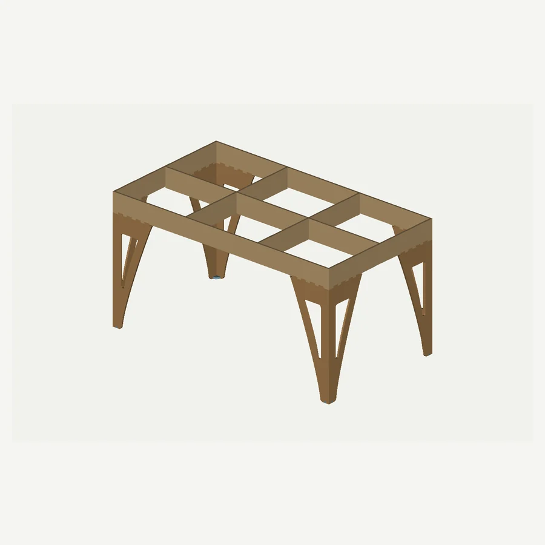

FLOW
שולחן קפה עם פלטה חלקה, חיבורים היקפיים ורגליים המורכבות משני חלקים בזווית ישרה.
בתכנון · טרם נוספו צילומי מוצר
בקשת הצעת מחירגלריית הדגם
טרם נוספו צילומי מוצר
מידות ומפרט
פרטי הדגם
- מידות הפלטה
- 860 × 480 מ״מ
- עובי חומר בתכנון
- 6 מ״מ
- מבנה הרגליים
- שני חלקים בזווית 90°
המידות הן של תכנון הבסיס. להתאמת מידות ולפרטי ייצור, שלחו פנייה עם דגם Flow.
תכנון וקבצים
קבצי התכנון זמינים להורדה. לפני חיתוך יש לבצע בדיקת התאמה לחומר בעובי 6 מ״מ; הקבצים אינם כוללים פיצוי לרוחב החיתוך.
תצוגת תלת־ממד
הדמיית תכנון CAD של Flow V3.1 (19 חלקים), ללא פלטה עליונה. חריצי החיבור בשתי משפחות קורות שונו כדי לפתור אי־התאמה בגרסת V3. לא בוצעה הרכבה פיזית מאומתת ולא ניתן אישור חוזק או ייצור.

גררו אופקית לסיבוב, צבטו לזום או השתמשו בכפתורים. גרירה אנכית גוללת את העמוד. Esc לחזרה לתמונות.